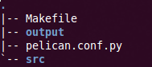

Blog on GitHub Pages
As a record, this post demos how this blog was published on GitHub pages. The steps below were performed on Ubuntu 10.10.
Stage 0: Blog Construction
Make sure your machine has pip installed. Installation of markdown and pelican:
$ sudo pip install markdown $ sudo pip install pelican
Create a folder as your local blog home. Run pelican-quickstart there:
$ pelican-quickstart
Checkout the folder. A couple of files (e.g. Makefile) and subfolders should appear.

Edit your makrdown source files as usual. When completed, drop them into your blog home's subfolder 'src' (pelican ver. 2) or 'content' (pelican ver. 3). Let's build up the blog in the terminal:
$ make
Open your browser and review your local blog at 'output/index.html'.
Stage 1: Publish on GitHub Pages
Make sure your machine has git installed. ghp-import is needed as well.
$ sudo pip install ghp-import
To make things easier, create a branch (say, source) to save source files including markdown and config scripts. The master branch can be used to save subfolder 'output'.
$ cd your_local_blog_home $ git init $ git add output $ git commit -m "master init" $ git checkout -b source $ git add Makefile pelican.conf.py src $ git commit -m "source init"
It's time for ghp-import. Edit the Makefile like this:
github: html ghp-import ${OUTPUTDIR} git push origin -f gh-pages:master
'ghp-import' will write a commit of folder 'output' to a local branch 'gh-pages'. To publish your blog, just push 'gh-pages' to GitHub as your remote master branch. Now, you can simply deploy your blog on GitHub pages using the last command:
$ make github
Happy blogging :)
There are comments.